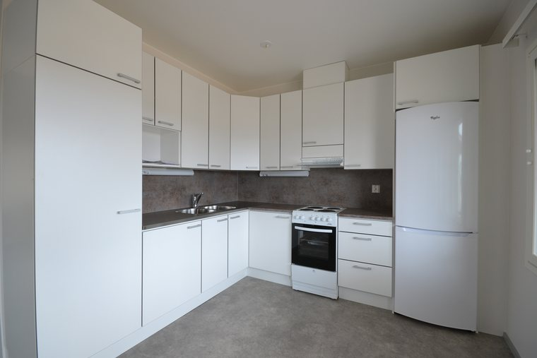

Aloita kerralla ja maksa pienissä osissa OP:n kautta
Pyydä tarjous Soita 044 015 0618Rahoituskumppani
OP Yrityspankki Oyj
KaPen kautta saat työhön OP Yrityspankin myyntirahoituksen ja voit maksaa hankkeen sinulle sopivissa erissä. Sama rahoitus sopii niin kylpyhuone-, katto- ja keittiöremonttiin kuin laajempaan uudis- ja saneeraushankkeeseen.

Joustava tapa toteuttaa hanke oman aikataulun ja budjetin mukaan
Rahoitusta pienestä remontista laajaan rakennushankkeeseen asti.
Kuukausierä pysyy samana, ja takaisinmaksuaika määräytyy valitsemasi erän mukaan.
Ensimmäisen laskun eräpäivä on vasta kuukauden kuluttua hankkeen valmistumisesta.
Voit maksaa luoton kerralla pois ilman lisäkuluja tai jakaa sen pienempiin eriin.
Seuraat ja hoidat rahoitusta OP:n verkkopalvelussa kaikkien pankkien tunnuksilla.
Osuuspankin omistaja-asiakkaalle kertyy rahoituksesta OP-bonuksia.
Laske kuukausierä laskurilla ja siirry hakemukseen.
Laskuri aktivoituu, kun KaPen itsehakukanavan tunniste on lisätty asetuksiin.
Neljä askelta hankkeesi alkuun
Ota yhteyttä ja kerro hankkeestasi. Teemme sinulle selkeän tarjouksen.
Käydään läpi, sopiiko OP:n rahoitus hankkeeseesi ja millaisin ehdoin.
Haku tapahtuu OP:n palvelussa. Saat päätöksen ja ehdot ennen sitoutumista.
Sovitaan aikataulu ja toteutetaan hanke. Maksat työn sovituissa erissä.
Kerro hankkeestasi, niin käydään maksuvaihtoehdot läpi yhdessä.
Pyydä tarjous Soita 044 015 0618Huomioi korot ja kustannukset ennen kuin otat luoton.
Rahoitus on kertaluotto, jonka todellinen vuosikorko 7 500 euron luotolle on 11,04 %, kun luoton korko on OP-prime + 6,95 % (9,45 % 7/26), perustamismaksu 0 euroa ja laskutuspalkkio 7 euroa/kk. Arvioitu luoton kokonaiskustannus on 14 135,27 euroa. Laskelma on tehty olettaen, että luotto on nostettu kokonaan, luoton korko sekä maksut ja palkkiot pysyvät samana koko luottoajan ja luotto maksetaan takaisin 170,00 euron minimilyhennyksin (1,70 % luoton määrästä) kuukauden välein, jolloin luottoaika on 84 kk. Luoton myöntää OP Yrityspankki Oyj, Gebhardinaukio 1, 00510 Helsinki.